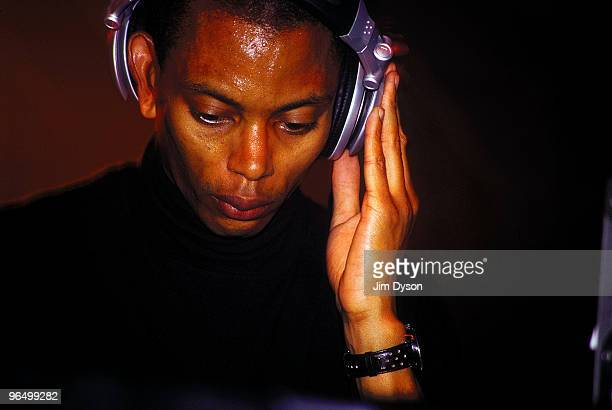

Jeff Mills Jeff Mills (born June 18, 1963, in Detroit, Michigan) is an American DJ, record producer, and composer. Thanks to his technical abilities as a DJ, Mills became known as The Wizard in the early to mid 1980s. In the late 1980s Mills founded the techno collective Underground Resistance with fellow Detroit techno producers 'Mad' Mike Banks and Robert Hood but left the group to pursue a career as a solo artist in the early 90s. Mills founded Axis Records in 1992.The label is based in Chicago, Illinois and is responsible for the release of much of his solo work.
Underground Resistance
Underground Resistance
Main article: Underground Resistance.
Mills is a founding member of Underground Resistance, a techno collective that he started with former Parliament bass player 'Mad' Mike Banks.The group embraced revolutionary rhetoric and only appeared in public dressed in ski masks and black combat suits. Mills never "officially" left the group, but did begin to pursue his own ventures outside of the collective.Many of Underground Resistance's labelmate's early releases were the product of various experiments by Banks and Mills, both solo and in collaboration, before Mills left the collective in 1991 to achieve international success as a solo artist and DJ. The collective continues to be a mainstay of Detroit's music scene.
UR related the aesthetics of early Detroit Techno to the complex social, political, and economic circumstances which followed on from Reagan-era inner-city economic recession, producing uncompromising music geared toward promoting awareness and facilitating political change. UR's songs created a sense of self-exploration, experimentation and the ability to change yourself and circumstances. Additionally, UR wanted to establish a means of identification beyond traditional lines of race and ethnicity. Another form of UR's rebellion concerns the rejection of the commercialization of techno. This is evident in the messages scratched in UR's records, lyrics and sounds expressing economic independence from major record labels.
Solo work and independent labels
The Tresor ClubThe Tresor Club in Berlin where Mills was a resident prior to launching Axis Records.
Mills left Underground Resistance in 1991 to pursue his own ventures. He relocated from Detroit, first to New York, then Berlin (as a resident at the Tresor club),[11] and then Chicago. There in 1992, with fellow Detroit native Robert Hood, he set up the record label Axis, and later, sub-labels Purpose Maker, Tomorrow, and 6277, all aiming for a more minimal sound than most of the techno being produced in those years.[12][13]
Mills released Blue Potential in 2006, a live album of him playing with the 70 piece Montpelier Philharmonic Orchestra in 2005.[14] The album was a remix for classical interpretation, following musical acts such as Radiohead.[14] In 2013, he released Where Light Ends, an album inspired by the Japanese astronaut Mamoru Mohri and his first trip to space.[5] In 2018, Mills recorded E.P. Tomorrow Comes The Harvest with legendary afro-jazz drummer Tony Allen.

Discography
What you should do to know more about Jeff Mills:
Copyright Igor_2022